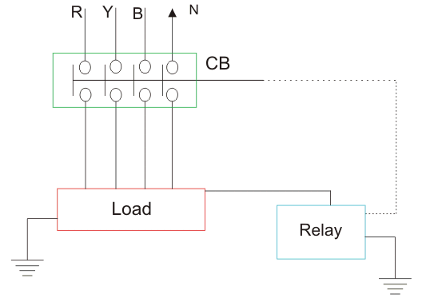
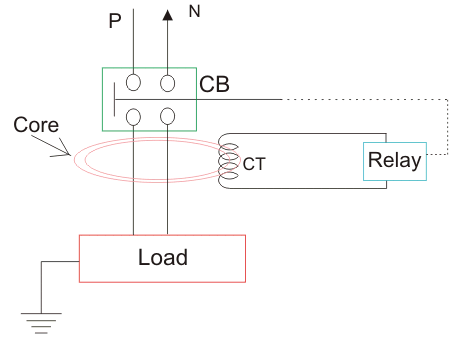
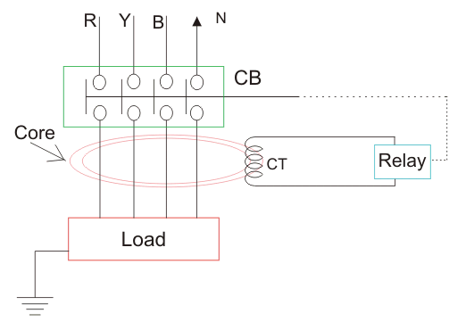

Earth Leakage Circuit Breaker or ELCB
If any current leaks from any electrical installation, there must-be any insulation failure in the electrical circuit, it must be properly detected and prevented otherwise there may be a high chance of electrical shock if-anyone touches the installation. An earth leakage circuit breaker does it efficiently. Means it detects the earth leakage current and makes the power supply off by opening the associated circuit breaker. There are two types of earth leakage circuit breaker, one is voltage ELCB and other is current ELCB.
Voltage Earth Leakage Circuit Breaker
The working principle of voltage ELCB is quite simple. One terminal of the relay coil is connected to the metal body of the equipment to be protected against earth leakage and other terminal is connected to the earth directly. If any insulation failure occurs or live phase wire touches the metal body, of the equipment, there must be a voltage difference appears across the terminal of the coil connected to the equipment body and earth. This voltage difference produces a current to flow the relay coil.

Voltage Earth Leakage Circuit Breaker
If the
voltage difference crosses, a predetermined limit, the
current through the relay becomes sufficient to actuate the relay for tripping the associated circuit breaker to disconnect the power supply to the equipment. The typicality of this device is, it can detect and protect only that equipment or installation with which it is attached. It cannot detect any leakage of insulation in other installation of the system.
Current ELCB or RCCB or Residual Current Circuit Breaker
The working principle of current earth leakage circuit breaker or RCCB is also very simple as voltage operated ELCB but the theory is entirely different and residual current circuit breaker is more sensitive than ELCB. Actually, ELCBs are of two kinds, but it is general practice to refer voltage based ELCB as simple ELCB. And current based ELCB is referred as RCD or RCCB. Here one CT core is energized from both phase wise and neutral wire.

current circuit breaker" width="461" height="348" class="size-full wp-image-15688" /> Single Phase Residual Current Circuit Breaker or Current ELCB
The polarity of the phase winding and neutral winding on the core is so chosen that, in normal condition mmf of one winding opposes that of another. As it is assumed that, in normal operating conditions the
current goes through the phase wire will be returned via neutral wire if there's no leakage in between. As both
currents are same, the resultant mmf produced by these two
currents is also zero-ideally. The relay coil is connected with another third winding wound on the CT core as secondary. The terminals of this winding are connected to a relay system. In normal operating condition there would not be any
current circulating in the third winding as here is no flux in the core due to equal phase and neutral
current. When any earth leakage occurs in the equipment, there may be part of phase
current passes to the earth, through the leakage path instead of returning via mental wire. Hence the magnitude of the neutral current passing through the RCCB is not equal to phase
current passing through it.

current circuit breaker or current elcb" width="531" height="370" class="size-full wp-image-15692" /> Three Phase Residual Current Circuit Breaker or Current ELCB
When this difference crosses a predetermined value, the
current in the third secondary winding of the core becomes sufficiently high to actuate the electromagnetic relay attached to it. This relay causes tripping of the associated circuit breaker to disconnect the power supply to the equipment under protection.
Residual current circuit breaker is sometimes also referred as residual
current device (RCD) when we consider the device by disassociating the circuit breaker attached to
RCCB. That means, the entire parts of RCCB except circuit breaker are referred as RCD.
 by
by